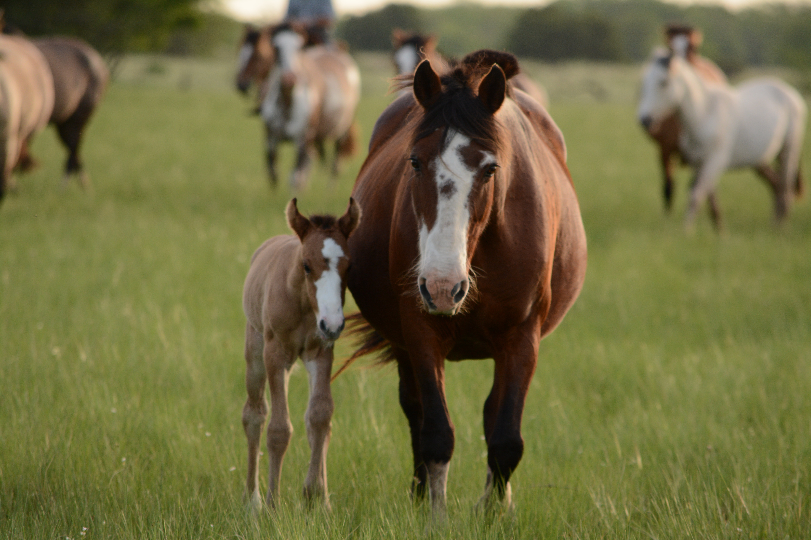
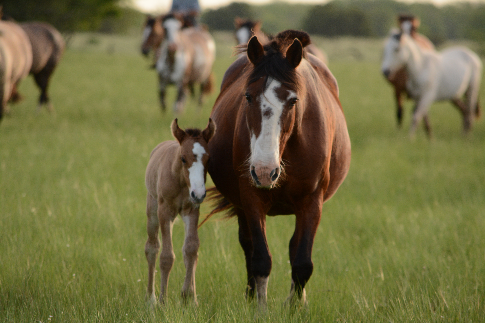

L'ÉTALON
SIDDARTA DE GONTREUIL
Siddarta est né à l’élevage de notre jument de loisir Montana. Monture complice avant d’être étalon, Siddarta a fait preuve, durant toutes ces années sous la selle, d’un mental à toute épreuve et d’une grande générosité. Les poulinières ont été choisies pour renforcer ses qualités et le compléter harmonieusement


NOM Siddarta de Gontreuil RACE Origine constatée ROBE Pie palomino overo ORIGINES par Vic Altaïr (OES) et Montana (RPB) NÉ 13 juin 2006 TAILLE 157cm ELEVEUR Marie-Etoile d'Hendecourt


 
